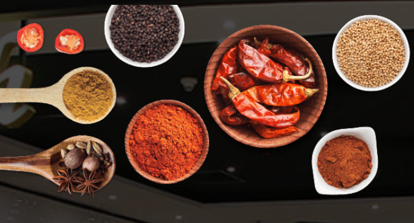
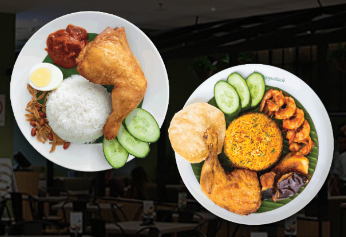
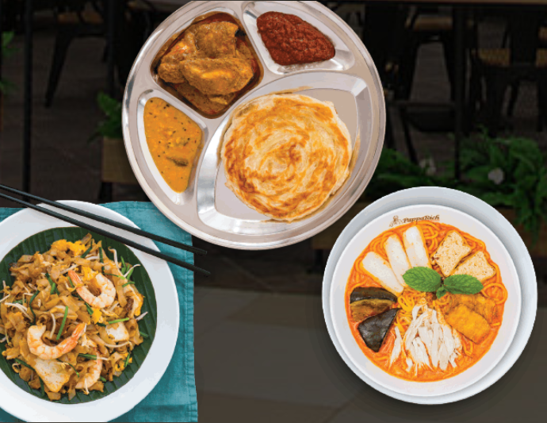

With migrants arriving over the centuries from the Middle East, India, China and Indonesia, Malaysia has a rich multicultural heritage, and this is reflected in Malaysian Cuisine, Which is heavily influenced by indian, Chinese and Indonesian Cuisine. |
|
|  | For the use of wok to the combination of spices found is generally spicy and always flavourful, often fragrant combination of spices such as coriander and cumin (the basis of many Malay curries), lemongrass, kaffir lime leaves, cardamom, star anise and fenugreek. |
Like many countries in Asia, rice is a staple of Malaysian cuisine, with local or Thai rice being the most common, and Indian basmati rice used widely in biryani dishes. NasiLemak, which is rice steamed in coconut milk and served with dried anchovies, peanuts, hardboiled eggs, cucumber and sambal, is often referred to as Malaysia's national dish, and can be eaten at any time of the day. It is best enjoyed with curry or very popular Rendang, Which is a spicy meat stew usually made with beef. |
 |
|  | Noodles are another staple, especially within the Chinese community, with the best-known example being the spicy noodle soup laksa. There are two main types of this crowd favourite- Curry Laksa, which is a coconut curry soup with noodles; and AsamLaksa, which is a sour fish soup with noodles. Meanwhile, Indian breads such as Roti Canai have transcended all cultures to become a quintessential Malaysian breakfast food, although it is just as widely consumed for lunch or afternoon tea, and is commonly enjoyed in the company of friend as a midnight hang out snack. |